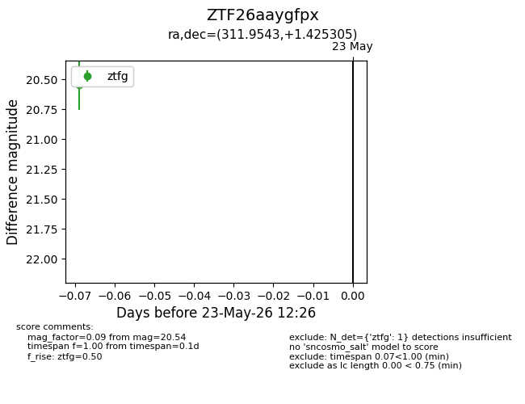
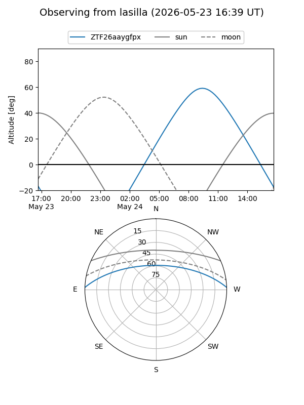
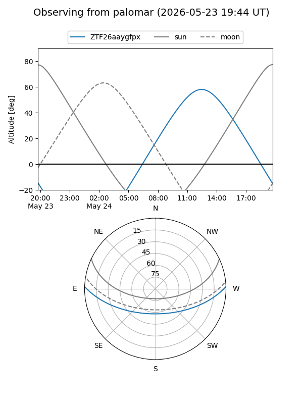

ZTF26aaygfpx
Target ZTF26aaygfpx at 2026-05-23 12:28
Aliases and brokers:
lsst-FINK: link
lsst-Lasair: link
lsst-ALeRCE: link
ztf-FINK: link
ztf-Lasair: link
ztf-ALeRCE: link
alt names
ZTF26aaygfpx (ztf,fink_ztf)
Coordinates:
equatorial (ra, dec) = 311.9543,+1.42531
equatorial (HMS+DMS) = 20:47:49.04,+01:25:31.10
galactic (l, b) = (48.5256,-24.91586)
Flags:
Photometry:
last ztfg=20.54
1 ztfg detections
Lightcurve

Visibility


Additional plots